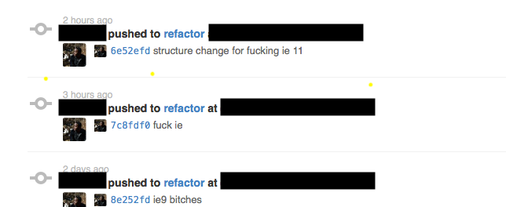
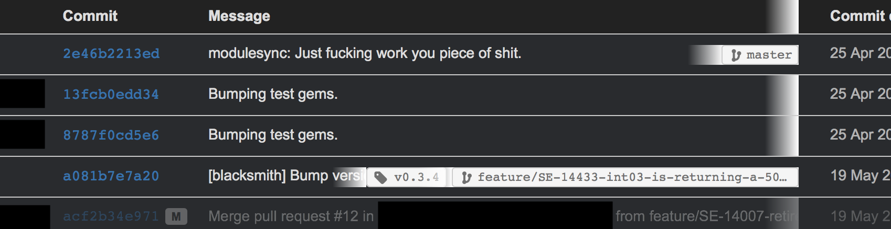
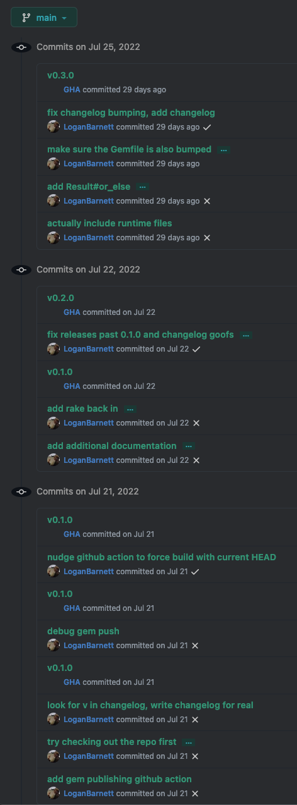
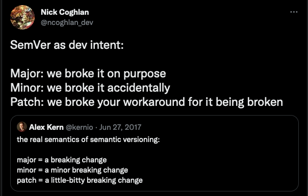

3. Different Kinds of Commits
3.1. Trivial Commits
Sometimes there really just isn’t a lot of meaningfulness to add to a commit. For example, https://github.com/LoganBarnett/dotfiles is my dotfiles repo, and many of the commits are like this one: 121f85.
add English to English
And the diff is:
diff --git a/ispell*english b/ispell*english index 892ebf0..4da5d7e 100644 --- a/ispell_english +++ b/ispell_english @@ -157,6 +157,7 @@ flavorful flirty fontification fontified +foundational FreeBSD freestanding furred
Riveting.
Not really a strong need for a lengthy commit message. I added “foundational” to my English dictionary. There really doesn’t need to be much explanation here.
3.2. Deployment Commits
It’s a rite of passage to undergo the terrible feeling of having to commit to
observe your changes. Some nastiness in the build/CI system only seems to
manifest there, and the only way that system runs or picks up changes is by
detecting new commits, or can only see committed code. An idealist would tell
you that you should do everything you can to run locally. They aren’t wrong.
Sometimes this means you would need to stand up your own Jenkins system locally,
and configure it just like the operations team did in their hosted environment,
except yours needs to run locally. Other times you’re using something like
GitHub Actions, and there’s recourse here. GitHub Enterprise exists for people
with high values of $MONEY and if you’re working as a simple software engineer
you might get paid well, but not enough for this.
Here’s some examples of people obviously flailing that I’ve observed over the years, self included:

Internet Explorer. Such fun!

Just work, indeed.
Or witness my own suffering:

When you get into this kind of loop, it is healthy to question whether it really is necessary. Change, commit, push, watch results is a very slow way to go about your work. Sometimes it’s the most reasonable thing to do, but it’s healthy to stop and ask if it really is. This also pollutes the commit history. Is it really harmful? No, not in a direct sense. But when folks go spelunking through the history later in desperate search of context, this will be what they have to filter through.
3.3. Healthy Commits
Now we have all of the unhealthy commits out of the way, let’s focus on what healthy commits look like.
Commits are there to give context to changes in a historical sense. They should tell the reader why the change is being made. The code itself shows you a bit of the what and the how, but doesn’t record how you got there exactly. That can be really helpful when debugging later. Remember: One of your debugging tools is to simply remove code or roll back changes until you see a change in behavior.
I hold this commit to be of high example.
Splayed out:
provide overrides for JQL to sync tickets This provides the ability to override the JQL used in ejira-update-jql. From #20 there is a need to synchronize only the user's involved tickets. The original behavior should be unchanged. @osktyn has generously provided a JQL statement to use. This is provided as `ejira-jql-my-unresolved-fn`, which can be set via the variable `ejira-update-jql-unresolved-fn`. An additional `ejira-update-jql-resolved-fn` is also provided but doesn't need to be overridden for the purposes of #20 - it just seemed appropriate given this change. Any stylistic changes are unintentional. Please nitpick away :) Thanks for making an awesome project! Closes #20
Let’s break down what went into this.
3.3.1. Destined for Reviewers
This is all gearing up to eventually land in a pull request description. In fact, pull requests will populate the title and description using your commits! There’s so much informational overlap between the two, we might as well just toss it into the commit and allow the review system (GitHub, GitLab, BitBucket, etc) to handle the rest.
In that way, you’ll see that your audience is both a reviewer who will allow the change to go in, and a future generation of engineers (which could include you, once you forget everything you did - and you absolutely will). The information the two audiences need is virtually the same. Reviewers need to understand how it works and why it’s happening so they can allow the changes in. Debuggers need context for why the changes were made in the first place, and what was attempted to be solved in doing so.
3.3.2. Commit Title
First, I have the succinct title:
provide overrides for JQL to sync tickets
I like to keep my commits in the present, imperative tense. This isn’t strictly needed, but tends to help keep the message short and succinct. Consider “adds foo behavior” over “will add foo behavior” or “added foo behavior”. It might not seem like much, but it adds up quickly. You want to keep your title around 72 characters or so. I think this trend started from the Linux kernel documentation which has:
For these reasons, the “summary” must be no more than 70-75 characters, and it must describe both what the patch changes, as well as why the patch might be necessary. It is challenging to be both succinct and descriptive, but that is what a well-written summary should do.
I reject the “why” listed in this. Save that for the body. When I’m looking at big lists of commits, I need you to tell me what changed, and I’ll dig into the why if I’m curious.
You’ll also note that the title isn’t fully capitalized/punctuated. This is for brevity, and the fact that it’s restricted one line helps with any possible misinterpretation.
3.3.3. A Blank Line
Yup. Git demands you have a blank line between the title and what comes next: the body.
add a foo This adds a foo because we really need one more foo.
Note the line separating them.
Fortunately editors will typically colorize the line in some nasty red color if you happen to forget this.
3.3.4. The Body
This is your chance to justify your changes and add any context the reviewer or future generations might need.
Here’s the body again from my earlier example:
This provides the ability to override the JQL used in ejira-update-jql. From #20 there is a need to synchronize only the user's involved tickets. The original behavior should be unchanged. @osktyn has generously provided a JQL statement to use. This is provided as `ejira-jql-my-unresolved-fn`, which can be set via the variable `ejira-update-jql-unresolved-fn`. An additional `ejira-update-jql-resolved-fn` is also provided but doesn't need to be overridden for the purposes of #20 - it just seemed appropriate given this change. Any stylistic changes are unintentional. Please nitpick away :) Thanks for making an awesome project! Closes #20
My rough structure is as follows:
- Mentions the ticket number that prompted this work and how this change relates to it.
- Add additional context for the reviewer and explains how the changes come together.
- Lets the reviewer know I’m a foreigner to the project and am happy to accommodate formatting changes. Largely this is optional, but polite since this change is against an open source project where we are all strangers to each other.
- Some thanks - I do this at the end of my first communications for most open source projects. Open source burn out is real, and just giving some thanks can help reduce. It also helps correct any misinterpreted tone that was lost in reading my earlier text.
3.3.4.1. Reference and Summarize Relevant Ticket
Whether you’re using something connected to Jira, GitHub itself, or some other review system, you can link to an issue or ticket (same thing) in the system using a specially formatted identifier (part of the ticket’s number itself).
In later days, I started using this format:
Address SE-12345 - File paths with spaces cause the deployment to fail.
This includes the ticket number (SE-12345), what this change does in regards
to that ticket (“addresses” the ticket), and a quick summary of what that ticket
is about (file paths with spaces cause the deployment to fail). This saves the
reader from having to dig into the ticket unless they want to. The review system
will automatically link to that ticket, so it’s handy. But also, organizations
shift in tech stack over time. This particular commit mentions a Jira formatted
number, but what if Jira is down? What if this commit is being looked at some
five years later when the organization decided to do away with Jira? At the very
least, we have some minimal context that will outlive such systems.
Including the ticket number is also required for SOC2 compliance, or at least as it manifests from security gurus at large. All work must be tracked back to a work item (ticket, issue, etc).
3.3.4.2. Describe the Changes
This is more free-form prose where you have your chance to explain an approach you made, or why you decided not to pursue more obvious solutions. Sometimes this will be minimal. You’re adding yet another button, and more buttons will be coming. Generally though, your changes will be coming in as “unit” of work. So it’s not just an added button, but the functionality that comes with it. You could explain what the new feature does in a short summary. For example: “This new UI allows users to add their favorite pets to their posts. This is tagged in the database and a webhook has been added so third party applications can notify pets of these mentions.” This kind of message speaks so much more than just a bunch of changes in a file.
3.3.4.3. Additional Context
It’s legitimate to throw in some extra things. For example:
- I’m not familiar to this code base, so please let me know if there’s anything I can do to better contribute.
- I tested against servers X and Y because I could not reproduce this locally.
- On a fresh clone I was unable to get the tests running locally, but they seem unrelated to my changes and no additional tests failed as part of these changes.
- This should not be merged until (link) is also complete.
- This is the third time we’ve fixed this problem this week. Perhaps after this is resolved we can look into the issue together?
Some of this is more discourse in nature and definitely on the softer side of communication.
3.3.5. What About All of My Small Commits?
Generally you’ll be working off a feature branch of some kind. Make all of the small, less verbose commits all you like. Once you get done though, you should squash your commits into the smallest number as is reasonable. These squashed commits can then include your verbose form of documentation.
Rebasing is a topic unto itself. I’ve met some folks getting closer to retirement who are vehemently against rebasing. To them I say: How are they going to know? I can rebase my private branches all day, or take a branch with my daily commits and create a new branch with the rebased commit(s). By the time it reaches a pull request, no one is the wiser.
3.3.6. I Don’t Want to Type This Much
This is a lot to type! But it’s better to have this. git blame becomes your
friend, as done git log. Debugging is a puzzle where the rules change like
Calvinball and oftentimes are done under tremendous pressure (production is
down). Any clues you can give yourself or others will be greatly appreciated
later.
It can be hard to keep this up, or to push yourself to write that little extra bit. But aside from a little bit of time (time yourself, it really isn’t that much), what does it cost you to leave fresh information out?
3.3.7. Punctuation, Grammar, Etc
Please use proper grammar and punctuation. Nobody is expecting perfect language in these commit messages, but you’d be surprised on how easy it can be for an innocuous sentence missing punctuation to look like the last line was deleted. I’ve literally run into this before.
Consider:
make sure the invoice notification email is formatted and sent before
Before… what exactly? It’s almost like the author was murdered mid sentence, with their last, dying act to commit and push whatever they had.
Let’s try this again:
Make sure the invoice notification email is formatted and sent before.
Okay the sentence ends a little weirdly. We don’t want to be grammar police but at the same time at least we understand the intent better here. We’re not left guessing.
We can do one better and just get a little more specific.
Make sure the invoice notification email is formatted and sent before anything else.
3.3.8. Wrap to 80
This advice is more for foreign repositories than one you are familiar with.
How many columns to wrap to, and whether or not you should wrap at all is something that folks go to nerd war over. I’ve not been at a workplace where there was total agreement here. One side wins, and the other shrugs and has to make due.
If you’re on the 80 column side, congrats! Your side won when it comes to commit
bodies. Part of the reason you want this is because when you run git log from
the command line, that log message eating up the full width of your monitor is
going to be difficult to read.
Generally you’re going to find your text editor already aligns with this for commit messages, and so there’s nothing to really do here.
You might wonder how you wrap the first line. You don’t! The summary line can only ever be one line. Keep it short!
3.3.9. Follow the Contributing Document
Oftentimes repositories have a CONTRIBUTING file (extension can vary or be
nonexistent). This file will outline what is expected of you to contribute
changes of any kind. This includes how to author commits, pull requests, etc. It
can vary quite a bit between projects, so make sure to check it. Some of the
things they ask may be in direct counter to what I’ve mentioned above. In those
cases, I recommend you acquiesce to their demands. Nobody is compelled to accept
your changes, and anything you can do to play by their rules will make it easier
to have your changes accepted.
Oftentimes, I find these oppressive. I see a lot of projects adopting Conventional Commits or something similar. I love me some CI, but I hate me some Semantic Versioning. Conventional Commits takes a bit to read through, and it is very rigid about what goes into the commit and how to do it.

What I dislike about Conventional Commits primarily is that it gets wrapped up in taxonomy of tickets. Is this a bug? Is it a feature? What should I use if my feature cleverly fixes a bug? Will this change break something?
Your intention will never have any impact over behavior. Claim “this shouldn’t break anything”, and you almost invite disaster. Seriously - go ask your favorite QA member about this. They’ll laugh at you. They laughed at me :( Virtually any change is a change in behavior, and changes in behavior break something.

My favorite patch version break was with Node v10 (I’ll find the exact version later). This patch version has 80 commits behind it, and made an “innocent” change which subtly broke the networking stack. My only recourse was to lock the Node version to an exact version until we could clear investigation time from the org (spoiler: it never really got fixed).
I’ve contributed to work projects where ticket numbers had to be in the title.
I’m not sure how I feel about this. On one hand, you can glance through tickets
quickly (though git log | grep -C12 <ticket-number> will do that too). On the
other hand, it eats away at previous space for communicating your changes in
summarized form.
As weird as these might be, it’s best to follow them. Over time, the ceremony
will melt away into habit and you’ll barely notice it. It’s something to
consider though, if you run your own project: How many hoops do you want your
contributers to jump through in order to correct a typo? The more requirements
your CONTRIBUTING document outlines, the fewer contributions you can expect.